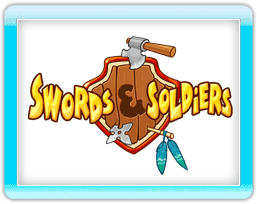

5 |
Instructions |
 |

Bienvenue dans Swords & Soldiers, un jeu de stratégie un peu loufoque pour WiiWare ! Le but du jeu ? Vaincre le camp situé du côté opposé de la carte à l'aide d'un arsenal varié d'unités et de sorts.
Les unités progressent automatiquement en attaquant tous les ennemis à leur portée. Quant aux sorts, ils se déclinent en diverses variations, décrites en détail dans la section Sorts à la page 12 de ce manuel.
Les unités s'achètent avec de l'or, obtenu dans les mines de la carte. Les sorts consomment du mana, qui se régénère automatiquement. Chaque faction dispose également d'une amélioration qui accélère la récupération de mana.
Nous avons fait en sorte que la navigation dans les menus soit la plus simple possible, mais voici tout de même quelques explications si tu as du mal à t'y retrouver.
Le premier écran de jeu correspond aux profils, qui contiennent toutes les données de sauvegarde. Si tu joues pour la première fois, tu peux créer ton propre profil, en choisissant son nom et sa couleur.
Après avoir créé un profil, tu arrives au menu principal, où tu peux choisir un mode de jeu. Si tu sélectionnes l'option Solo, tu accèderas à plusieurs types de modes.
C'est là que tu peux régler les paramètres principaux du jeu, comme le volume de la musique.
Ce mode te propose de suivre l'épopée de trois factions différentes. Leurs péripéties te permettront de te familiariser avec leurs atouts et leurs faiblesses respectives, des connaissances qui te serviront dans les autres modes de jeu. C'est aussi là que tu peux débloquer certains éléments du jeu.
Choisis ce mode pour participer à un combat contre l'ordinateur.
En jouant au mode Campagne, tu pourras débloquer plusieurs mini-jeux, accessibles depuis ce menu.
Dans Swords & Soldiers, tes exploits ne passent pas inaperçus ! Consulte cette sec pour savoir comment les réussir et voir ceux que tu as débloqués. |
 |
 |
 |